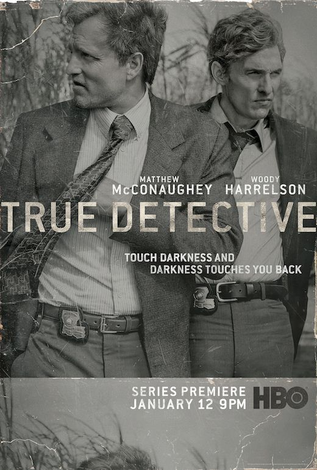
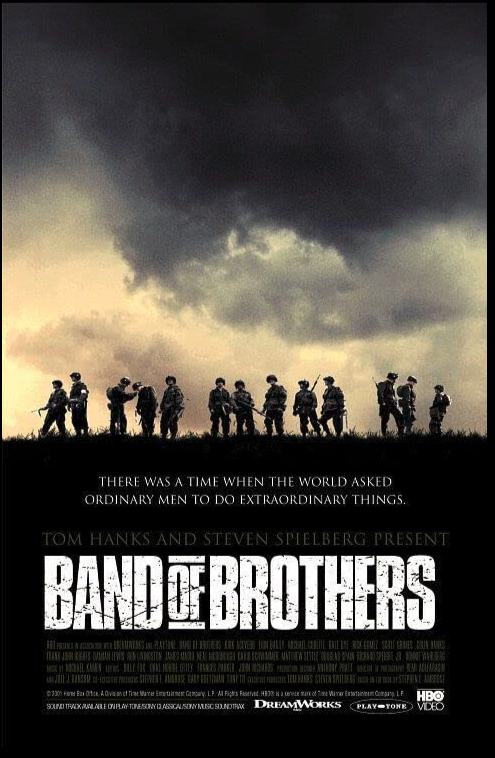

Various chronicles of deception, intrigue and murder in and around frozen Minnesota.
Yet all of these tales mysteriously lead back one way or another to Fargo, North Dakota.

True Detective
2014-2019 ‧ Crime/Drama/Mystery ‧ 55m
Seasonal anthology series in which police investigations unearth the personal and professional
secrets of those involved, both within and outside the law.
Succession
2018- ‧ Drama ‧ 1h
The Roy family is known for controlling the biggest media and entertainment company in the world.
However, their world changes when their father steps down from the company.

Band of Brothers
2001 ‧ Action/Drama/History ‧ 9h 54m
The story of Easy Company of the U.S. Army 101st Airborne Division and their mission in World War II Europe,
from Operation Overlord to V-J Day.
Patrick Melrose
2018 ‧ Drama ‧ 5h 2m
This series depicts how the son of an aristocratic family seeks redemption and recovery.
Patriot
2015-2018 ‧ Comedy/Drama/Thriller ‧ 58m
Follows the complicated life of intelligence officer John Tavner,
whose latest assignment - to prevent Iran from going nuclear - requires him
to forgo all safety nets and assume a perilous non-official cover.
For All Mankind
2019 ‧ Drama/Sci-Fi ‧ 1h
In an alternative version of 1969, the Soviet Union beats the United States to the Moon,
and the space race continues on for decades with still grander challenges and goals.
Years and Years
2019 ‧ Drama/Sci-Fi ‧ 1h
IAs Britain slowly turns into a dictatorship throughout the years,
the lives of a typical busy family from Manchester converge on one crucial night in 2019.
It's a Sin
2021 ‧ Comedy/Drama/History ‧ 3h 59m
A chronicle of four friends during a decade in which everything changed,
including the rise of AIDS.